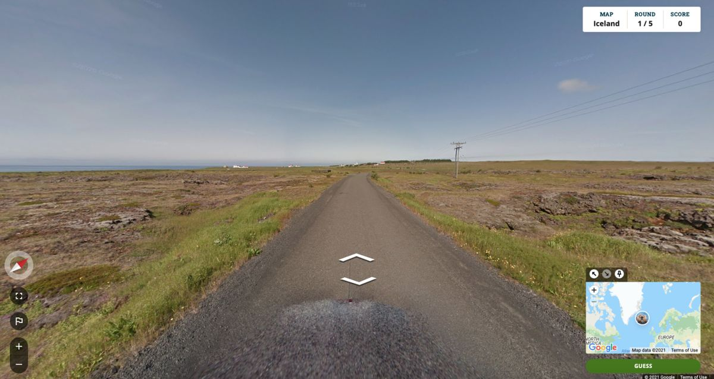
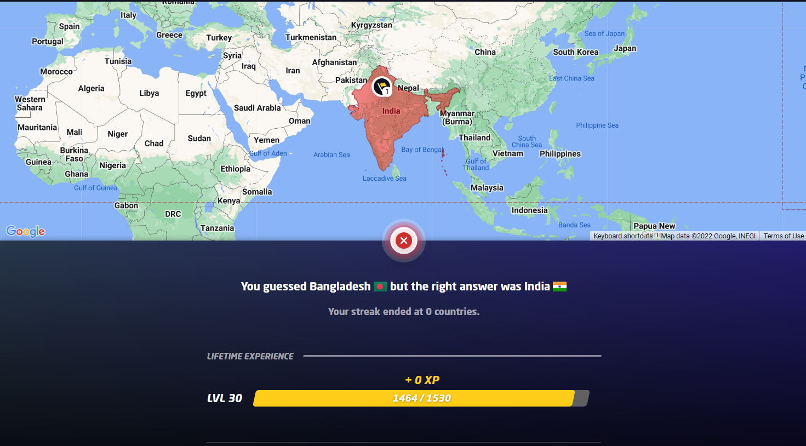
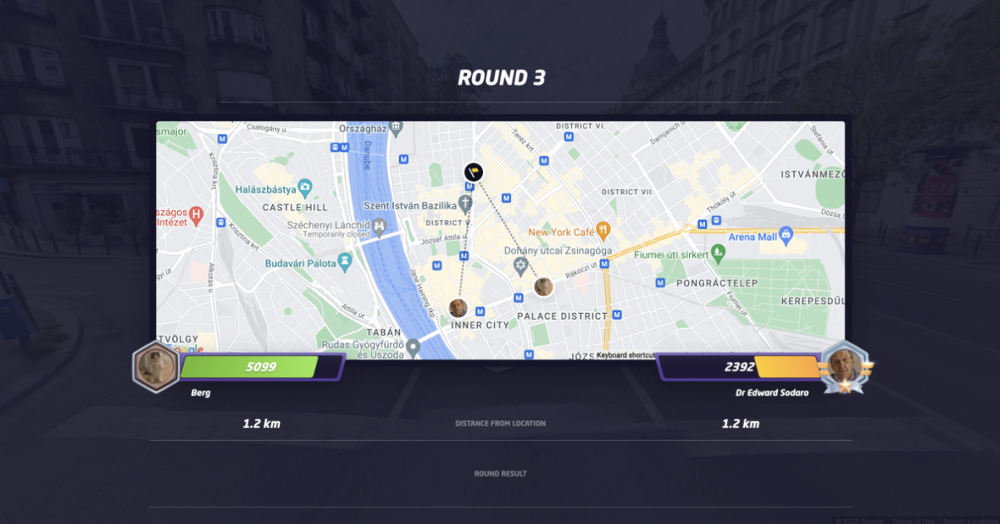
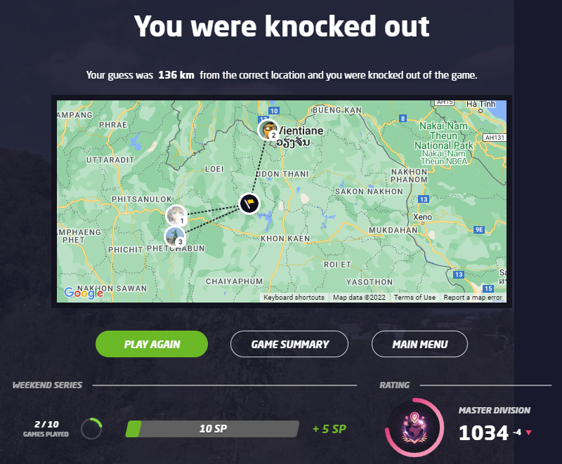
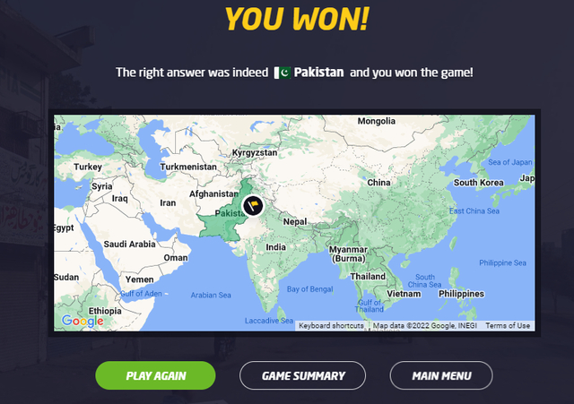

Classic Mode
Classic mode was the first gamemode introduced in GeoGuessr. Like any other gamemode, you get dropped to a random location and you have to pinpoint your location in the world. There a total of 5 rounds, with each round, you can gain as much as 5,000 points!
Streaks
This is the same as classic mode, but instead of gaining points from pinpointing your location, you rack up points by correctly guessing the country. There are no round limits in this gamemode however.

Multiplayer

Duels
You and an opponent get dropped at the same, random location and you both have to guess where you are. After guessing, the opposing player is given 15 seconds to make their guess, or else they will get no points for that round.
How do I win?
Both players start off with 6000 HP, and every round, the player with the higher score will subtract have their round's score from the opponent's HP. For the first 4 rounds, this is the same format, but after 4 rounds you get what's called a healing round. In this, you will multiply your score by 0.25x and you'll be added that amount of points to your HP
What happen next?
After the healing round, the round score will gradually be multiplied by multiples of 0.5. Round 5 will be 1.5x, Round 6: 2.0x, Round 7: 2.5x, etc.
Battle Royale: Distance
A lobby of 8-10 people get three guesses to pinpoint their location. The one who has the farthest distance gets eliminated. You get 1 guess per round per following: Survive the round, Correctly guess the country, and get a close guess. So you don't always get 3 guesses per round. And, oh, you have 1 minute to guess as close as possible


Battle Royale: Countries
You get three guesses to correctly guess what country you are in. You are given 1 minute and 30 seconds. You also get one lifelinea 50/50. You have to correctly guess, so if only 1 person guesses correctly, they win!